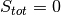
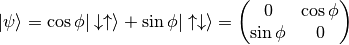

The goal of this exercise is to build the wavefunction of a pair of spins one-half (a.k.a. a pair of qbits), and calculate its entanglement entropy. This is a pretty trivial exercise that you could do without much hassle in a piece of paper (see below.) The purpose is just get you familiar with how things are done in the code before moving to bigger adventures.
Calculate the entanglement entropy when you trace out one of the spins in a general state in the spin zero subspace of a two spin one-half system. For which of the states in the spin zero subspace is are the two spin maximally entangled (i.e. the Von Neumann entanglement entropy is maximal)?
The first thing we need to do is to write the wavefunction of the two spin system. In dmrg101 the wavefunctions are represented as matrices instead of vectors, which may be more familiar to you.
The reason for that is that as in DMRG we always have to split the physical systems (say a chain of spins, or the two spins of the problem) in left and right subsystems, the notation with matrices is more suited. In the dmrg101 code the rows of the matrix representing a wavefunction correspond to states of the left subsystem, and the columns correspond to states of the right subsystem.
For example to represent the two spin one-half system, with one spin as left subsystem and the other as right subsystem, we need a 2x2 matrix. Matrix elements in the first row (column) will correspond to states with the left (right) spin down. Matrix elements in the second row (column) will correspond to states with the left (right) spin up. The choice of whether the first or second row corresponds to spin down or up is arbitrary, but once you made the choice you have to be consistent.
If we restrict ourselves to the  subspace, the most general wavefunction for the two qbit systems is simply:

The plan is the following. First we are going to write a function to calculate the wavefunction for the two-qbit system as a function of the an angle psi:
def create_two_qbit_system_in_singlet(psi):
""" Returns the wf of the system as a function of `psi`.
The (normalized) wavefunction of the two-qbit system can be
parametrized as a function an angle `psi`.
Parameters
----------
psi : a double
Parametrizes the wavefunction.
Returns
-------
result : a Wavefunction
The wavefunction of the two-qbit system for the given `psi`.
"""
result = Wavefunction(2, 2)
# set the different components.
result[0, 0] = 0.
result[0, 1] = cos(psi)
result[1, 0] = sin(psi)
result[1, 1] = 0.
return result
Now we are going to get the reduced density matrix tracing out the left qbit and calculate the corresponding entanglement entropy:
def trace_out_left_qbit_and_calculate_entropy(wf):
"""Calculates the entropy after tracing out the left qbit.
To calculate the entanglement entropy you need to first build the
reduced density matrix tracing out the degrees of freedom of one of
the two qbits (it does not matter which, we pick up left here.)
Parameters
----------
wf : a Wavefunction
The wavefunction you build up the reduced density matrix with.
Returns
-------
result : a double
The value of the von Neumann entanglement entropy after tracing
out the left qbit.
"""
reduced_DM_for_right_qbit = wf.build_reduced_density_matrix('left')
evals, evecs = diagonalize(reduced_DM_for_right_qbit)
result = calculate_entropy(evals)
return result
Now it just a matter to generate a bunch of different values for psi, calculate the corresponding wavefunction with the first function above, and pass the wavefunction to the second funciton above to get the value for the entropy. The following code makes this:
def main():
"""Calculates the entanglement entropy for a system of two qbits in a
singlet state.
"""
#
# get a bunch of values (50) for psi, and calculate the entropies
#
psi_values = range(50) # [0, 1, 2, ... 49]
psi_values /= (2*pi/len(psi_values)) # [0., 2*pi/50, 4*pi/50, ...]
#
# python function map applies a function to a sequence
#
wfs = map(create_two_qbit_system_in_singlet, psi_values)
entropies = map(trace_out_left_qbit_and_calculate_entropy, wfs)
#
# find to which value of psi corresponds the max entropy
#
zipped = zip(psi_values, entropies)
max_value = max(zipped, key=lambda item: (item[1]))
#
# print the results
#
print "The maximum value for entropy is %8.6f." %max_value[1]
print "The wavefunction with max entropy is: "
print create_two_qbit_system_in_singlet(max_value[0])
print "The whole list of psi vs entropies is: "
print "%8.6, %8.6" %zipped[0], %zipped[1]
It is important that you note that this is the general solution for a system of two qbits, and that two-qbits cannot be more entangled that in the singlet state. In system of many particles is splitted in two parts (think in a larger chain of spins cut at some point in two), one can always represent the relevant degrees of freedom at the cut as a set of qbits. Then it follows from the result you just proved that the most economical way of representing the entanglement across the cut is to map the degrees of freedom of each side to a qbits and maximally entangle them across the cut. Any other state to be formed with the qbits in one side and the other, will either have less entanglement across the cut than the one in the original degrees of freedom, or use more qbits at each side of the cut. This is the basis of the mappings used in quantum information methods like MPS or TNS, and you will see maximally entangled spins/qbits a lot in the rest of the school.